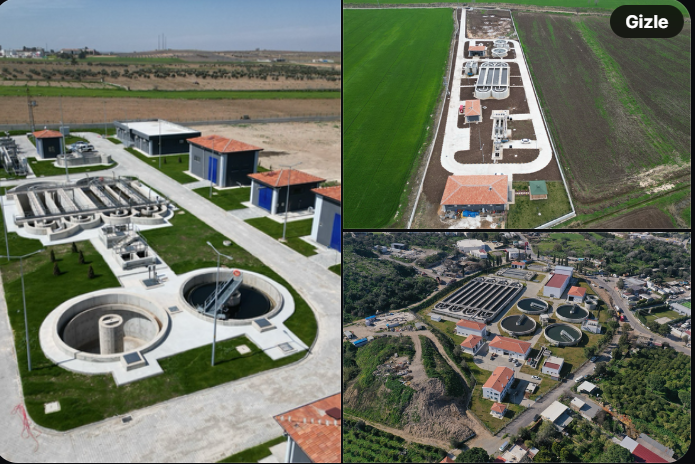

Çevre, Şehircilik, İklim Değ. Bakanlığı ÇŞİDB
@cevsehbak · 27 Ağu
1.231 adet atık su arıtma tesisi ile, 2002'de %35 olan atık su arıtma hizmeti verilen belediye nüfusu oranını 2025'te %91.1'e çıkardığımızı biliyor musunuz❓
Genel Duygu Skoru
Pozitif
"Yorumlarda bakanlık çalışmalarını takdir ile birlikte Gelibolu'daki sorunlara da dikkat çekiliyor."
1,254
Toplam Yorum
8,732
Yorumlara Gelen Toplam Beğeni
67%
Pozitif Yorum Oranı
33%
Negatif Yorum Oranı
Duygu Dağılımı
Yorum Akışı (İlk 48 Saat)
Türkiye Etkileşim Haritası (Duygu Yoğunluğu)
En Çok Etkileşim Alan Yorumlar
Ahmet Yıldırım
@cevsehbak Yaşasın yeşil Vatan yaşasın gelecek nesil durmak yok temiz Türkiye ekonomik ve ekolojik refahı tamamlamış Türkiye hedefine tam gaz.
Nur Meriç
@cevsehbak Gelibolu'da atık su arıtma tesisi yok, bu nedenle deniz suyuna karışan kanalizasyon ve atık sular nedeniyle her yaz denize girenler hastalanıyor. Daha da önemlisi alt yapı çok eski olduğu için içme suyuna karışan atık su nedeniyle geçdiğimiz yaz tüm ilçede salgın yaşandı. Umarim bu sorunlar en kisa zamanda çözülür.
Sevda Özdemir
@cevsehbak Çevre ve Şehircilik Bakanlığımızın çalışmalarinı tebrik ediyor ve başarılarınızın devamını diliyorum 👏👏🇹🇷🇹🇷 Darısı Gelibolu beleyisinin başina...🙏
Gemini AI ile Tema Analizi
1. Vatanseverlik ve Milli Duygu
Yorumların bir kısmında milli simgeler ve vatansever ifadeler öne çıkıyor.
2. Gelibolu İlçesi Sorunları
Birden fazla yorumda Gelibolu ilçesindeki altyapı ve çevre sorunlarına dikkat çekiliyor.
3. Bakanlık Çalışmalarına Takdir
Bakanlığın çevre ve şehircilik alanındaki çalışmaları takdir ediliyor.